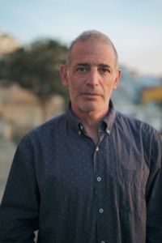

China & East Asia
China, Hong Kong, North Korea and the region.
16 films · 7 sessions · 64 people
Often together with: War, conflict & the militaryMigration & bordersHealth & medicineDemocracy & electionsMiddle East & South AsiaWhistleblowers & leaks
Films
 We Bloom in Spring2025 · 19 min
We Bloom in Spring2025 · 19 min Dust to DustKôsai Sekine2024 · 89 min
Dust to DustKôsai Sekine2024 · 89 min Mistress DispellerElizabeth Lo2024 · 94 min
Mistress DispellerElizabeth Lo2024 · 94 min- All Static & NoiseDavid Novack2023 · 102 min
 Myanmar DiariesThe Myanmar Film Collective2022 · 70 min
Myanmar DiariesThe Myanmar Film Collective2022 · 70 min The GrabGabriela Cowperthwaite2022 · 104 min
The GrabGabriela Cowperthwaite2022 · 104 min Do Not CirculateTiffany Sia2021 · 17 min
Do Not CirculateTiffany Sia2021 · 17 min Red Taxi2021 · 14 min
Red Taxi2021 · 14 min 76 DaysHao Wu, Weixi Chen2020 · 93 min
76 DaysHao Wu, Weixi Chen2020 · 93 min- A Thousand CutsRamona Diaz2020 · 98 min
 AssassinsRyan White, Jessica Hargrave2020 · 104 min
AssassinsRyan White, Jessica Hargrave2020 · 104 min- Lost and FoundOrlando von Einsiedel2019 · 22 min
 The NightcrawlersAlexander A. Mora2019 · 39 min
The NightcrawlersAlexander A. Mora2019 · 39 min People’s Republic of DesireHao Wu2018 · 95 min
People’s Republic of DesireHao Wu2018 · 95 min Abacus: Small Enough to JailSteve James2016 · 90 min
Abacus: Small Enough to JailSteve James2016 · 90 min The Ivory GameKief Davidson, Richard Ladkani2016 · 116 min
The Ivory GameKief Davidson, Richard Ladkani2016 · 116 min
Sessions
- 2024 · Thu Nov 7 · 4:00 PMConversation · DX²Into the Deep Blue: A Conversation with the Outlaw Ocean ProjectIan Urbina, Ben Blankenship, Sig Libowitz
- 2022 · Fri Oct 14 · 10:00 AMPanel · DX²Facing GoliathHamza Syed, Byron Hurt, Jennifer Baichwal, Nathan Halverson, Amanda Pike, Kathy Davidov
- 2022 · Fri Oct 14 · 2:00 PMPanel · DX²Vanishing Act: Capturing the Death of DemocracyVasily Polonsky, Ricardo Sandoval-Palos, Corinne van Egeraat, Drew Sullivan
- 2021 · Wed Oct 13 · 9:45amPanelHARDBALL SEASONJames Harkin, Tiffany Sia, Laurent Richard, Drew Sullivan, Pádraig Hughes
- 2020 · Thu Oct 15 · 12:15pmPanel · DX²Censored in BeijingJames Tager, Isaac Stone Fish, Megha Rajagopalan, Chris Fenton
- 2019 · Fri Oct 11 · 9:45 AMPitchDocs in Progress PitchSara Barger, Amy Marquis, Jennifer Huang, Rodrigo Dorfman, Peter Eversoll, cai thomas, Serena Ajbani, Andrea Raby
- 2019 · Thu Oct 10 · 4:00 PMPanel · DX²The UndertowRamona Diaz, Courtney Radsch, Andalusia Knoll Soloff, Nanfu Wang, Brenda Coughlin
People most involved
 Amanda PikePanelist, filmmaker, moderator · 6 editions, 2019–2025The Center for Investigative Reporting
Amanda PikePanelist, filmmaker, moderator · 6 editions, 2019–2025The Center for Investigative Reporting Nathan HalversonFilm subject, panelist · 2022
Nathan HalversonFilm subject, panelist · 2022

 Kôsai SekineFilmmaker, panelist · 2024
Kôsai SekineFilmmaker, panelist · 2024- Yuima NakazatoFilm subject, panelist · 2024
- Emma D. MillerPanelist, filmmaker · 2024
- Ramona DiazFilmmaker, panelist · 2 editions, 2019–2020
 Tiffany SiaFilmmaker, panelist · 2021
Tiffany SiaFilmmaker, panelist · 2021
- Kief DavidsonFilmmaker · 2016
- Richard LadkaniFilmmaker · 2016
- Steve JamesFilmmaker · 2016
- Ti-Hua ChangPanelist · 2016
- Vera SungFilm subject · 2016
- Orlando von EinsiedelFilmmaker · 2019
- Alexander A. MoraFilmmaker · 2019
 Gabriela CowperthwaiteFilmmaker · 2022
Gabriela CowperthwaiteFilmmaker · 2022
 Molly JahnFilm subject · 2022
Molly JahnFilm subject · 2022- The Myanmar Film CollectiveFilmmaker · 2022


David NovackFilmmaker, panelist · 2023- James MillwardModerator · 2023
 Amy SchwartzModerator · 2024
Amy SchwartzModerator · 2024 Elizabeth LoFilmmaker, panelist · 2 editions, 2021–2024
Elizabeth LoFilmmaker, panelist · 2 editions, 2021–2024- Wang ZhenxiFilm subject · 2024
 Wonjung BaeModerator · 2025
Wonjung BaeModerator · 2025- Weixi ChenFilmmaker · 2020
- Ryan WhiteFilmmaker, panelist · 2 editions, 2017–2020
- Jessica HargraveFilmmaker · 2020